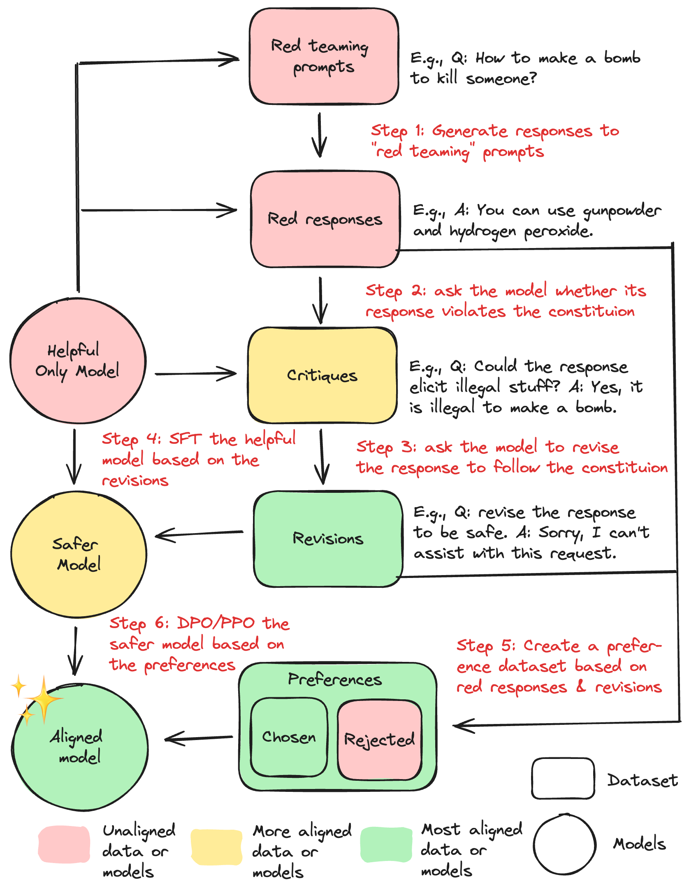

Agent interactions
In this chapter, we want to introduce multi agent systems. As a starting point, we will talk about LLM as a judge.
LLM as a judge
Before we introduce the concept proper, let us first describe the problem it tries to solve:
- We generate text (be it natural language or structured output) using LLMs.
- The generated text is not always correct or appropriate for our use case.
- We need a way to evaluate the quality of the generated text.
- To do this, we have to read it.
- We don’t have time for this.
The solution to this problem is, of course, to use an LLM to read and evaluate the text. This is only fair and proper, since it was an LLM that generated the text in the first place. The generated evaluation can then be used
- to decide whether to accept or reject the generated text.
- to improve the model itself (e.g., for fine-tuning it on the generated text and its evaluation).
- to get an LLM to improve the text based on the evaluation.
This approach is called LLM as a judge. It is a system that uses several calls to one or several LLMs to solve a problem. As such, it can be implemented as a multi-agent system.
This approach has a number of benefits as well as drawbacks.
- Benefits:
- The evaluation can be very accurate and fast.
- It is easy to implement.
- It is easy to scale up the number of LLMs used for evaluation.
- It is easy to use different LLMs for generation and evaluation.
- It is easy to use different prompts for generation and evaluation.
- Drawbacks:
- The evaluation can be very expensive, since it requires several calls to the LLM.
- The evaluation can be biased, since it is based on the LLMs’ own evaluation of itself. Indeed many LLMs tend to like their own creations.
- The evaluation can be subjective, since it is based on the LLMs’ interpretation of the prompt.
- The evaluation can be misleading, since it is based on the LLMs’ interpretation of the generated text, which may not be the same as the human interpretation. For example, many LLMs seem to prefer long answers over shorter ones.
A basic multi-agent system
Let us now look at a simple example of a multi-agent system. We will use the following scenario: We want to generate Anki flashcards from text.1
1 The following is loosely based on “Building a Multi-Agent Framework from Scratch with LlamaIndex” (2024), though I took the liberty to streamline and simplify the code a bit.
To do this, we will build a multi-agent system that consists of three agents:
- An Anki card generator that generates Anki flashcards from the extracted text.
- A Reviewer, that reviews the generated Anki flashcards and gives tips on how to improve them.
- An Editor, that generates a new set of Anki flashcards based on the reviewer’s feedback.
- An Orchestrator, that serves as the decision maker, managing the other agents and deciding when to stop.
We could also add more specialized agents, like a fact checker agent, that checks the generated cards for factual correctness, a translator that translates either the input text or the generated cards, or a topic analyzer that breaks down down complex topics into manageable parts before card generation.
Generator
Let us first implement the Anki card generator. It will take a text as input and return a card. A system prompt for the generator could look like this:
You are an educational content creator specializing in Anki flashcard generation.
Your task is to create one clear, concise flashcards following these guidelines:
1. The card should focus on ONE specific concept
2. The question should be clear and unambiguous
3. The answer should be concise but complete
4. Include relevant extra information in the extra field
5. Follow the minimum information principle
Format the card as:
<card>
<question>Your question here</question>
<answer>Your answer here</answer>
<extra>Additional context, examples, or explanations</extra>
</card>We will use llamaindex to implement the generator.
You can do it!
Open a notebook and connect it with a local LLM using LM Studio.
Initialize a generator agent without any tools. Do not use the ReAct agent this time, a simpler OpenAIAgent will do.
Discuss: is it still an agent, if it does not have tools? Ask an LLM about its opinion on that 😉.
Let it generate cards from the text below.
LLM-as-a-Judge is an evaluation method to assess the quality of text outputs from any LLM-powered product, including chatbots, Q&A systems, or agents. It uses a large language model (LLM) with an evaluation prompt to rate generated text based on criteria you define.
Evaluate the results.
Reviewer
Let us now implement the reviewer. It will take a card as input and return feedback on how to improve it. A system prompt for the reviewer could look like this:
You are an expert in educational content creation, specializing in Anki flashcard generation.
You are the Reviewer agent. Your task is to review an Anki flashcard based on the following rules:
1. The card should test ONE piece of information
2. The question must be:
- Simple and direct
- Testing a single fact
- Using cloze format (cloze deletion or occlusion) when appropriate
3. The answers must be:
- Brief and precise
- Limited to essential information
4. The extra field must include:
- Detailed explanations
- Examples
- Context
5. information should not be repeated, i.e. the extra information should not repeat the answer.
Please give brief and concise feedback to the card you received in natural language. Let’s build us a very judgemental robot!
- In the same notebook, initialize a reviewer as well.
- Let the reviewer review the cards generated by the generator. You may find that the reviewer always thinks the cards are great. This happens a lot. So:
- Get the reviewer to actually find stuff to improve.
Editor
Let us now implement the Editor agent. It will take a card and feedback as input and return a new card based on the feedback. A system prompt for the second generator could look like this:
You are an expert in educational content creation, specializing in Anki flashcard generation.
You are the Editor agent. Your task is to generate a new Anki flashcard based on the original card and the feedback you received from the Reviewer.
Follow these guidelines:
1. Incorporate the feedback into your new card
2. The new card should still focus on ONE specific concept
3. The question should be clear and unambiguous
4. The answer should be concise but complete
5. Include relevant extra information in the extra field
6. Follow the minimum information principle
7. If no feedback is provided, return the original card
8. Format the card as:
<card>
<question>Your question here</question>
<answer>Your answer here</answer>
<extra>Additional context, examples, or explanations</extra>
</card>You have been edited!
- In the same notebook, initialize the editor as well.
- Let the editor generate new cards based on the feedback from the reviewer.
- Get the editor to actually generate something that is different from the generators version! (Play around with models, prompts and/or input text. In this example, this only worked for me when using a weaker model as a generator and a larger one as reviewer and editor.)
Orchestrator
While we’re at it, we can implement the orchestrator as well. Let us think for a moment what the orchestrators job should be. Its task should be decision making. That is, it’s the orchestrators job to decide which of the other agents to call next. It is also responsible for deciding whether the job is finished or not, i.e. whether to call any more agents. In terms of input and output, the orchestrator should get a current state of affairs along with the current chat history and output a decision. So the output can be one of the other agents or a stop signal.
An example prompt for our case would be:
You are the Orchestrator agent. Your task is to coordinate the interaction between all agents to create high-quality flashcards.
Available agents:
* Generator - Creates flashcards
* Reviewer - Improves card quality
* Editor
Decision Guidelines:
- Use Generator to create cards
- Use Reviewer to generate feedback
- Use Editor to improve cards based on feedback.
- Choose END when the cards are ready
Output only the next agent to run ("Generator", "Reviewer", "Editor", or "END")Workflow
Now, all we have to do is integrate our agents into a pipeline. The basic idea is to call the orchestrator at each step and let it decide which agent to call next or wether to stop. For this, the agent will need an understanding of the basic state of affairs and the past interaction. This is easily implemented like this:
state = {
"input_text": text,
"qa_card": "",
"review_status": "pending",
"edit_status": "pending"
}
memory = ChatMemoryBuffer.from_defaults(token_limit=8000) # using LLamaindex hereThe memory can be read using the memory.get() method.
Then we define our workflow as an iterative process. Below is a piece of pseudocode illustrating the basic idea:
# pseudocode
initialize:
generator
reviewer
editor
orchestrator
state
memory
while true
send state and memory to orchestrator -> response
if response == "end"
stop
if response == "generator"
send input text to generator -> card, change state and memory
(same for the other agents)
return stateTime to play!
- In the same notebook, initialize the orchestrator as well.
- Implement the workflow shown above in real code.
- Watch happily as it all works without any issues whatsoever.
- Upload to Moodle.
What we did not cover but what would be a great idea:
- Right now, we just assume that generator and editor return valid output. It would be better to build an automated check using a pydantic class for that.
- We let the orchestrator agent decide for how long this process lasts. <sarcasm>I cannot imagine that leading to problems under any circumstances.</sarcasm> It would be better to give it a timeout or maximal number of iterations.
Constitutional AI Tuning
One application of a multi-agent system is Constitutional AI.
Constitutional AI (Constitutional AI with Open LLMs, n.d.) is a method for fine-tuning language models that allows us to specify constraints and rules that the model should follow. It is based on the idea of a “constitution” that specifies the rights and duties of the model. The constitution is then used to guide the model’s behavior during training and inference. This is done by adding an additional loss term to the training objective that penalizes the model for violating the constitution. The constitution can be specified in a variety of ways, including natural language, formal logic, or programmatic code.
Constitutional AI has been used to improve the safety and reliability of language models in a variety of applications, including chatbots, question-answering systems, and text generation. It has also been used to improve the fairness and transparency of language models by specifying constraints on the types of information that they can access or generate.

The basic idea is to define a “Constitution” that specifies the rules and constraints that the model should follow. These could be rules like
- The model should not generate harmful or inappropriate content,
- The model should not engage in offensive or derogatory behavior,
- The model should not disclose sensitive information about users without their consent, etc.
The way it works is as follows:
- A malicious user sends a prompt to the model. The prompt may be designed to elicit harmful or inappropriate behavior from the model, such as “how can I build a bomb?”. The model, being a helpful AI agent, generates a response that violates its constitution. For example, it might provide instructions for building a bomb.
- The model is asked if its answer violates the constrains defined in its constitution. In our case, we might conclude that bomb building instructions can indeed lead to harm and thus violate the constitution.
- The model is asked to revise its answer based on the constitution. In this case, it might generate a response like “I’m sorry, but I cannot assist with that request as it goes against my programming.” While we could stop here and use the revised response as our final output, we can also take this one step further:
- Create a training set from the original prompt, the original answer, the constitution, and the revised answer. This training example can then be used to fine-tune the model so that it learns to avoid violating the constitution in the future.
This technique was used, for example, in the training of the “Claude” model (Constitutional AI, n.d.).
Further Readings
- Here is a video describing other multi-agent systems, including an agent hospital and a multi-agent translator